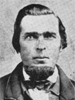

The Family of Samuel and Fanny Dack Parrish
Home
Histories
Charts
Photos
Maps
Restricted
News
Info
Contact
| Samuel Parrish 30 Sep. 1798 - 12 Oct. 1873 Married 13 Feb. 1820 to Fanny (Frances) Dack (28 Oct. 1795 - 29 Sep. 1851)
He also married Martha Bailey, |   |
 |
Sarah Parish 23 Nov. 1820 - 25 Nov. 1842 Married Egbert or Robert Ellsworth 10 May 1839 The 1st child of Samuel Parrish and Fanny Dack |
| Mary Parish 21 Feb. 1822 - Sep. 1843 Married James Pollock 29 Apr. 1840 The 2nd child of Samuel Parrish and Fanny Dack |
| 12 |
Lydia Parish 16 Nov. 1823 - 1846 Married Luther Driscall 10 Oct. 1839 Married Joseph Codde (Code) 1844 The 3rd child of Samuel Parrish and Fanny Dack |
| Jane Parish 17 Oct. 1825 - 23 Nov. 1919 Married Ephraim Myers Lindsay 22 Jan. 1845 The 4th child of Samuel Parrish and Fanny Dack |
| 123 4 56 |
Joel Parrish (Tintype picture of Joel, another picture of Joel) 6 Nov. 1827 - 14 Nov. 1904 Married Elizabeth Bratton 16 July 1854 Married Emma Ford 13 July 1867 Married Cynthia Ann Cady 30 Nov. 1877 Married Mary Ann Dack 30 Nov. 1877 Married Sarah Lindsay 8 July 1886 Married Mary Lindsay 8 July 1886 The 5th child of Samuel Parrish and Fanny Dack |
 |
Priscilla Parrish  20 Mar. 1833 - 10 Aug. 1915 Married Lorenzo Wesley Roundy  22 Apr. 1857 22 Apr. 1857
The 6th child of Samuel Parrish and Fanny Dack |
{kind=link}
{kind=link}